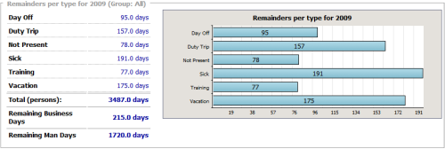

Global Statistics Display


| Navigation: Main Interface | |
Global Statistics Display |
|
The statistics page offers statistical information of the current database based on a specific time period this period can be selected in the upper part of the page.
There are to ways to select a statistic report time period. Prepared are the most common periods these statistics are usually requested.
Selecting a Standard Period
•Current Month
This period reaches from the first day to the last day of the current month
•Current Quarter
This option selects the current quarter of the year (Jan-Mar, Apr-Jun, Jul-Sep, Oct-Dec) based on the current month. If the current month is May the second quarter will be taken, which is 01. April - 30. June.
•Current Half
This option selects the current half of the year (Jan-Jun, Jul-Dec) based on the current month. If the current month is May the second quarter will be taken, which is 01. January - 30. June.
•Current Year
This option selects the current year, which always is 01. January - 31. December.
•Group Filter
The second drop down box provides the option to show the selected statics for one group only.
•Absence Filter
With this drop down you an select an absence type filter that is applied to the first two diagrams about total absences per user and per group.
Selecting a Custom Period
The custom period selection offers the option to choose an individual period, group and absence type for which the statistics will be displayed.
Total Absence per User
This statistic displays all taken absences (all absence types or as filtered) in the chosen time period accumulated for each user and also shows the total amount. Note, that those absence types that count as 'present' are not included in this count. Instead, they are counted in the presence count.
The total amount is shown as:
•Total (persons)
These are the accumulated absence days of all persons (netto absence).
Total Absence per Group:
Total absence per Group
This statistic displays all taken absences (all absence types or as filtered) in the chosen time period accumulated of each user group and also shows the total amount. The total amount is shown as:
•Total (groups)
The absence days of all groups are accumulated. If a user is member in two or more groups a single absence day of him or her will count for each of his/her groups (brutto absence).
•Total (persons)
These are the accumulated absence days of all persons (netto absence).
Total Presence per Group
This statistic displays all presences in the chosen time period accumulated of each user group and also shows the total amount. Note, that this number also includes absence types that count as 'present'.
The total amount is shown as:
•Total (groups)
The presence days of all groups are accumulated. If a user is member in two or more groups each presence day of him or her will count for each of his/her groups (brutto presence).
•Total (persons)
These are the accumulated presences days of all persons (netto presence).
Total Presence per User
This statistic displays all presences in the chosen time period accumulated for each user and also shows the total amount. The total amount is shown as:
•Total (persons)
These are the accumulated presences days of all persons (netto presence).
Total Absence by Type
This report lists all taken absences accumulated for each absence type.

This report is always based on the time period of the current year, 1. January - 31. December, independent from any selected period. It lists all remainders of all users (except those hidden from the calendar) or the selected group based on their taken absences and their allowance (i.e. Allowance minus Taken). Only those absences are taken in consideration where the allowance and its factor is greater than zero.
Additionally the remaining business days in the current year are shown, and also the remaining man days. The latter are the remaining business days multiplied with the amount of users in the calendar.